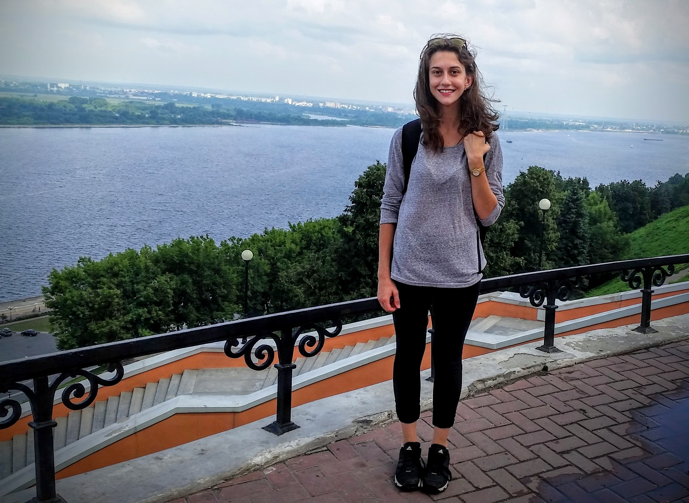

Feel free to explore! This my first website project and it is still under construction, so please make sure to check back for updates.
My name is Maria, and I am currently an undergraduate student at the University of Illinois at Chicago pursuing a dual-degree in Math and Computer Science and History. I am also pursuing two linguistic minors-- French and Russian. I have always had a passion for languages, as I grew up in a household speaking three languages -- Slovak, Rusyn, and English. I began my university career by applying my love of language through history, specifically honing in on Eastern European and Russian history, however, I now strive to expand my love of language by exploring the world of Math and Computer Science.